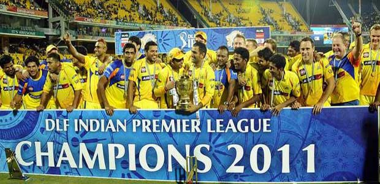

The tournament was won by the Chennai Super Kings for the second successive season (despite popular opinion), defeating Royal Challengers Bangalore by 58 runs in the final in Chennai, with the winning team's Murali Vijay being named Man of the Match. With this win CSK became the only team to have won the IPL on more than one occasion.Despite Bangalore failing to win the title, one of the team's players, Chris Gayle was named as the tournament's best player. He scored 608 runs in twelve innings – the most in the tournament – as well as picking up eight wickets, having joined the team after the start of the season due to an injury to another overseas player, Dirk Nannes. Mumbai Indians' Lasith Malinga set a new record for most wickets taken within an Indian Premier League season, claiming 28 wickets during the campaign, but Mumbai had to settle for third place in the tournament, having lost to Bangalore in the second qualifier. Chennai, Bangalore and Mumbai represented India in the Champions League 2011 tournament in September. The Fly Kingfisher Fair Play Award was again won by the Chennai Super Kings for topping the fair-play table.
